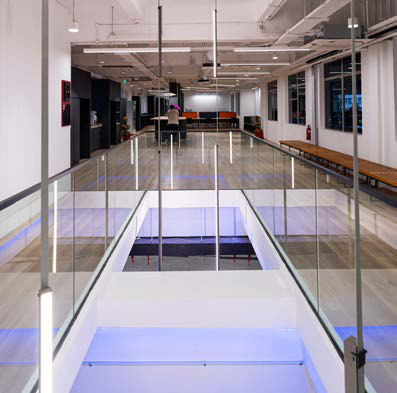

Low voltage systems were, until relatively recently, often treated as secondary considerations within the broader delivery of building services. Typically introduced later in the design process and procured as client-direct or nominated packages, they were treated as supporting elements rather than core to overall building performance.
That position has changed. Clients are now engaging with these systems much earlier in the project lifecycle, with connectivity, controls, security and data now addressed as integral components of building delivery rather than standalone additions.
As these systems have moved earlier in the project lifecycle, the nature of their delivery has also evolved. Within design and build environments, particularly across the commercial and hospitality sectors, low voltage systems are often procured directly by the client or through nominated vendors. However, responsibility for their coordination and integration typically sits with the main M&E contractor.

There was a time when the technology package was the last conversation in a project. A scope handed to a specialist vendor after the real engineering had been settled. Structured cabling, access control, CCTV. Bolted on at the end, coordinated loosely, commissioned in a rush before handover.
Across every sector, technology systems are becoming central to how buildings operate. What was once considered ancillary infrastructure is now critical to security, communication, energy performance and operational efficiency. Extra Low Voltage systems no longer sit at the back of the queue. They influence coordination strategy, programme sequencing and long-term building performance.
In commercial offices, clients expect seamless connectivity, advanced access control and integrated workplace systems. In hospitality and retail, digital guest experience platforms, surveillance and energy management must run reliably around the clock. Industrial and specialist facilities rely on monitoring, automation and real-time data to maintain operational continuity.